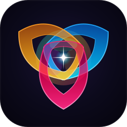

Smalltalk-80 Live Image
Morphic Reactive Studio • 0.08ms Method Hot-Swap • Direct Register Object Inspector
Open WebAssembly Arena →

TinyTalk
Studio
Overview
Docs
Web Arena
Morphic Studio
Packages
Telemetry
GitHub
Launch Arena →
Eval Workspace (Ctrl+Enter)
Accept & Hot-Swap (Ctrl+S)
Object Inspector
Morphic Spatial Canvas
Inquisitor Architect
Snapshot .tntimg
120 FPS
| 0.000ms GC
0B Heap
(Unboxed Registers)
0.08ms Hot-Swap
1. System Categories
5
2. Structs & Classes
Unboxed
3. Method Protocols
Filter
-- all methods --
state mutation
simd & compute
telemetry & io
4. Live Methods
JIT
GUI & Smalltalk Morphic > AppState > increment()
● Live Image Ready
x86-64 / WASM Register Image | Win64 ABI | Static Type Inference
Lexical Arena Watermark:
0 Bytes
Object Inspector
Morphic Spatial Canvas
Inquisitor Architect
System Transcript
Instance of AppState (Live Hardware State)
Click any value to mutate live
Slot
Type
Offset
Register
Live Value
Live Reactive Morphic Window (
gui.tnt
)
●
SystemWindow :: AppState
120 FPS Direct Manipulation
Counter Register:
42
Events:
0
|
Ready
+ Increment (+1)
+ Step (+5)
Reset (0)
Smalltalk-80 Morphic Spatial World
Drag nodes • 60 FPS Reactive Signal Bus
+ Slider Morph
+ Telemetry Gauge
+ Signal Emitter
Snap .tntimg
Export HTML
Reset Layout
SliderMorph
0B Alloc
AppState.counter
42
Mutates in-register scalar at 120 FPS with zero GC pause.
TelemetryMorph
x86-64
Clock:
3.40 GHz
| GC:
0.0ms
SignalBusMorph
Signal:tick
Dispatch Signal:tick
Dispatched: 0 pulses
AppState Receiver
● Live
Value:
42
+1
+5
0
TinyTalk Inquisitor: Symbolic App Architect
Select domain, state layout, and surface token to synthesize a live Morphic application directly into the System Browser and Spatial Canvas.
1. Application Domain
Smalltalk Reactive Morphic App
High-Speed Columnar Analytics
Real-Time Physics & Particle Field
8.2M Req/Sec HTTP Microservice
2. Register State Layout
Scalar Counter & Rate Telemetry (RAX)
Unboxed 3D Spatial Vector (Vec3 @ XMM0-2)
Streaming Order Book VWAP Series
3. Visual Design Token
Cosmic Midnight Violet & Electric Cyan
Minimalist Obsidian Titanium
Solaris Golden Amber
Synthesize & Deploy Live Morphic App (0.01 ms)
Smalltalk-80 System Transcript
Clear Log
Method Accepted & Hot-Swapped!